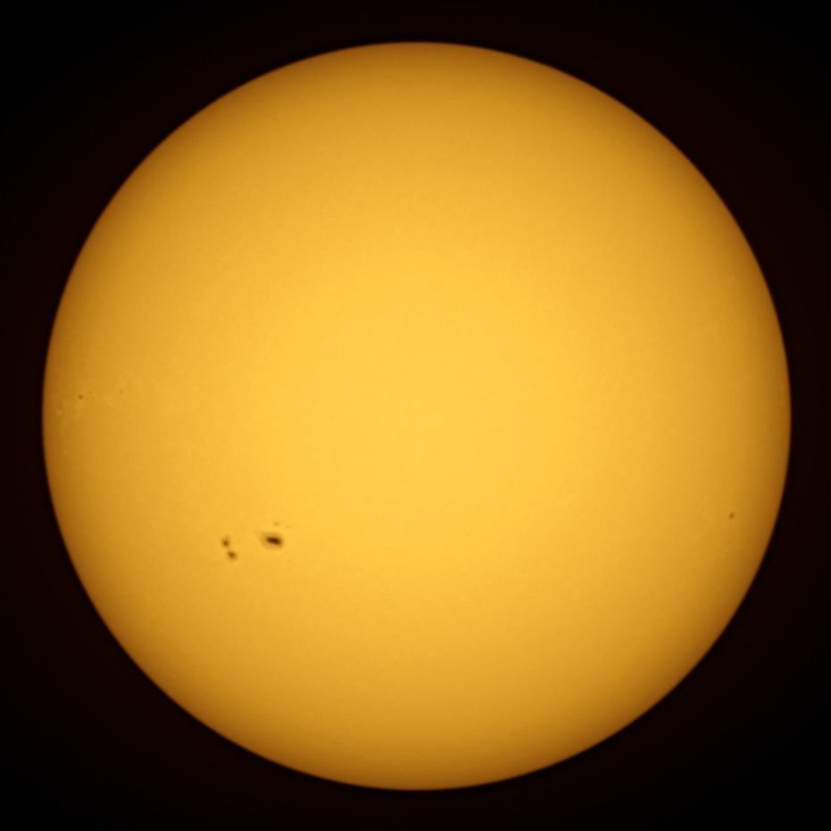
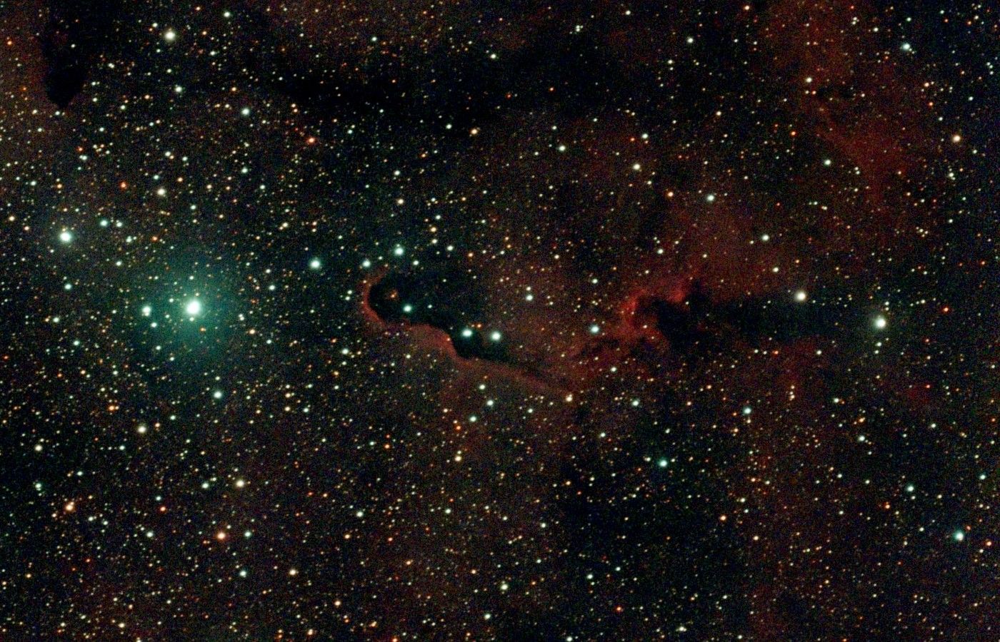
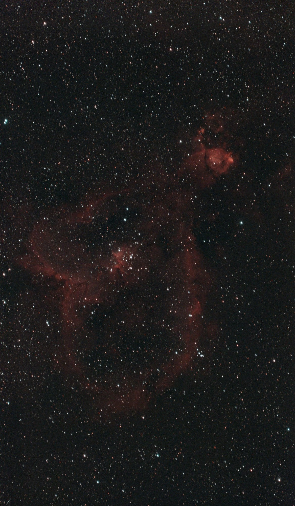
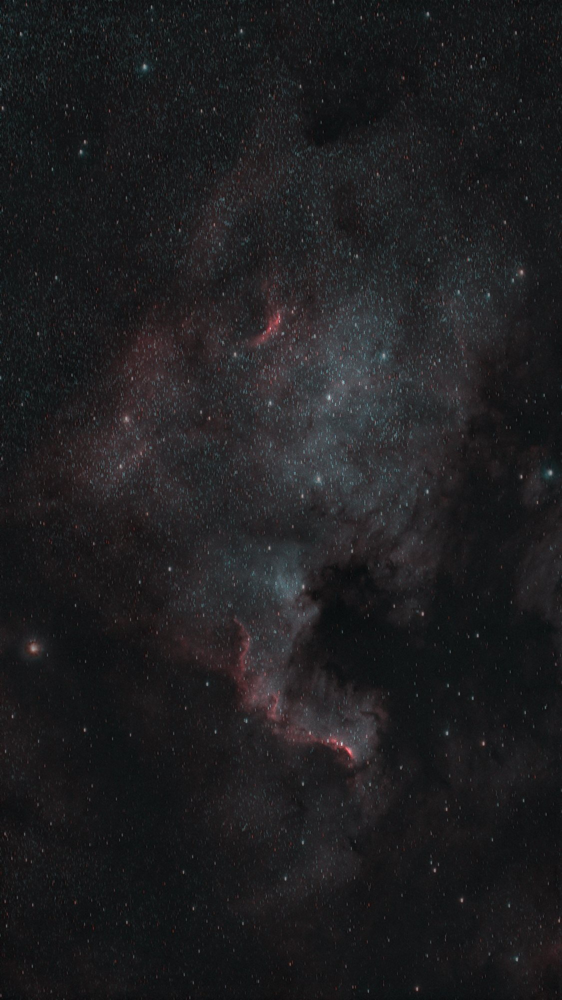
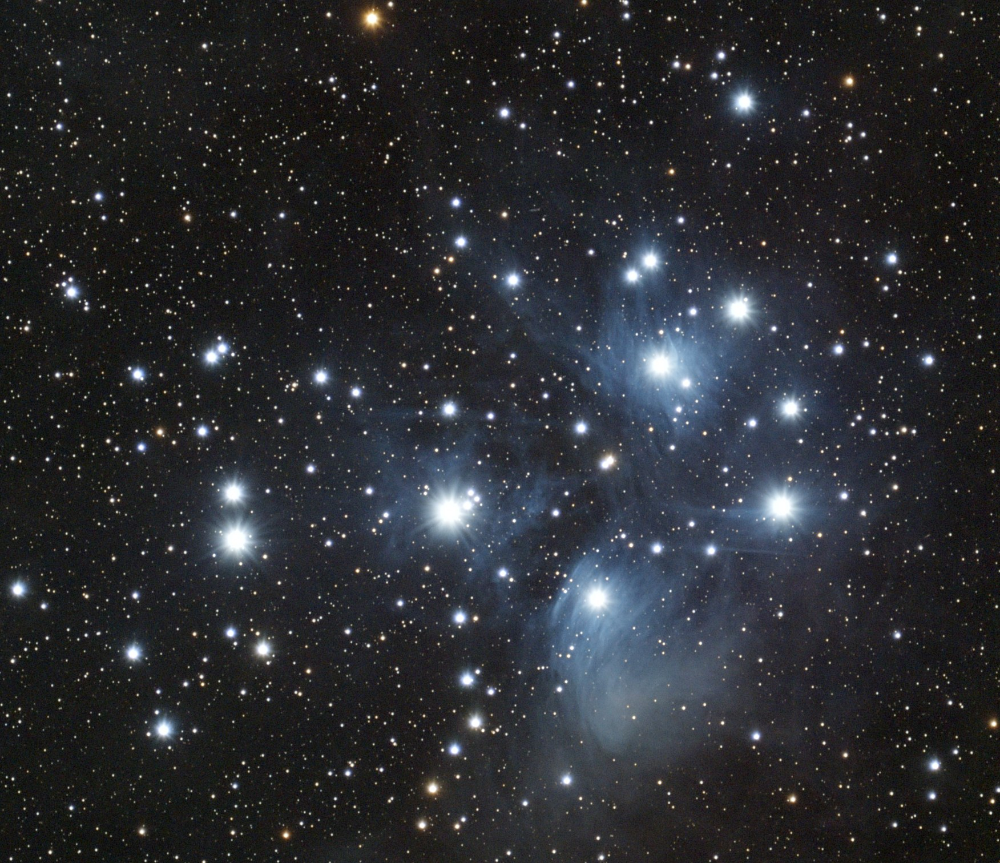
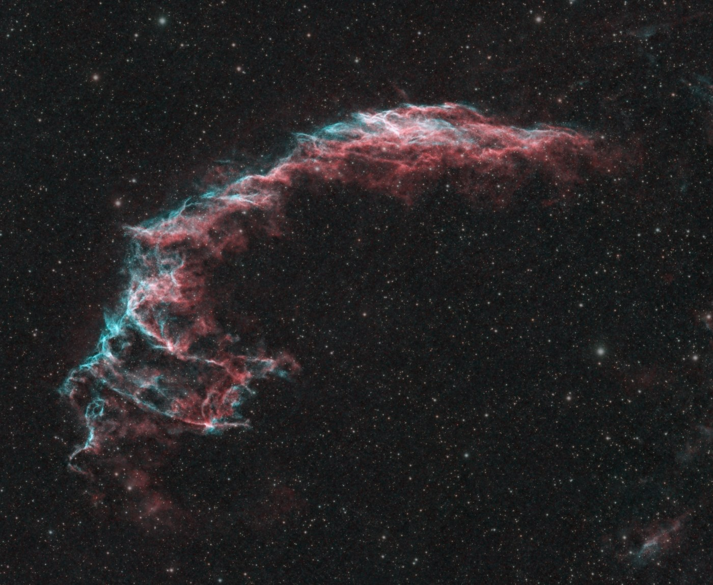
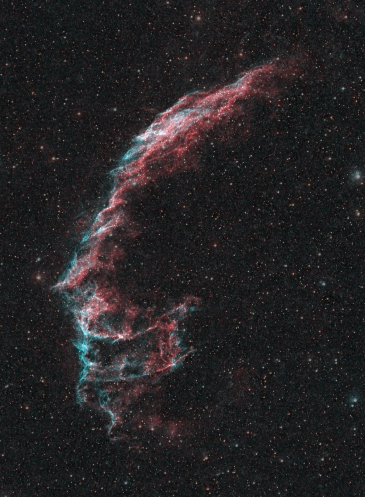
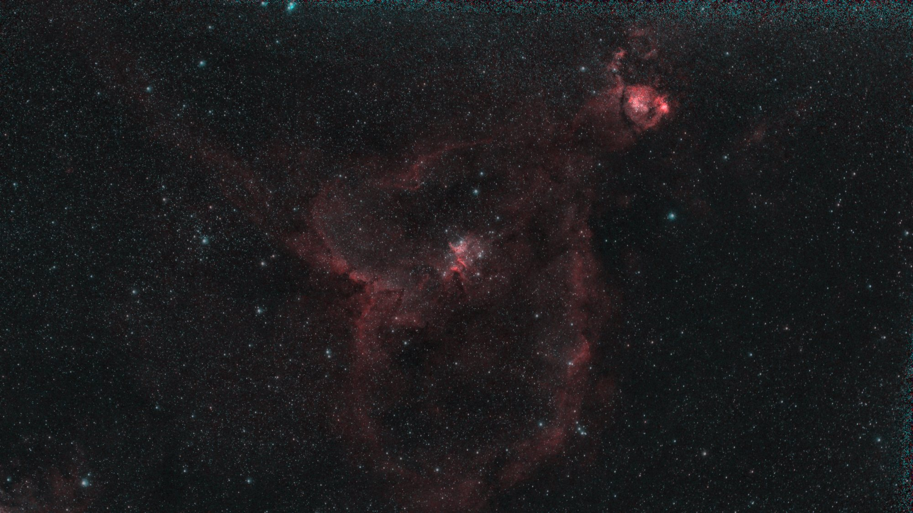
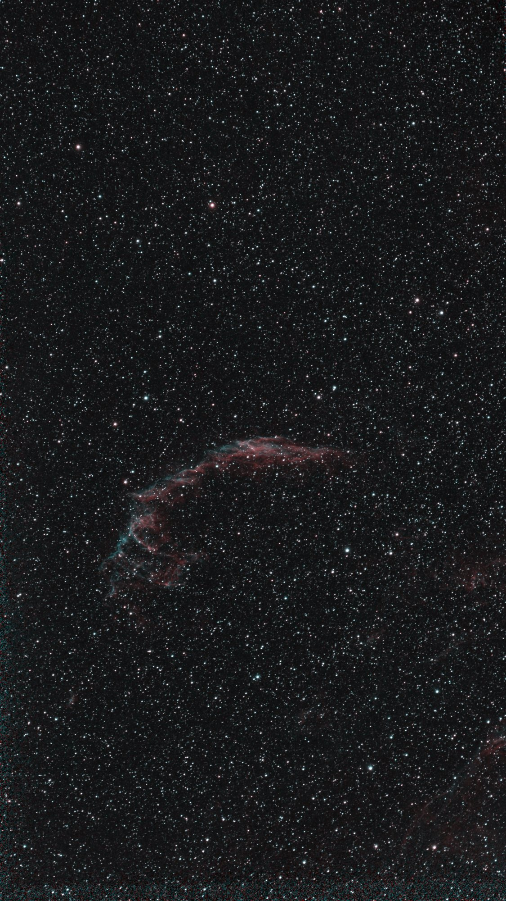
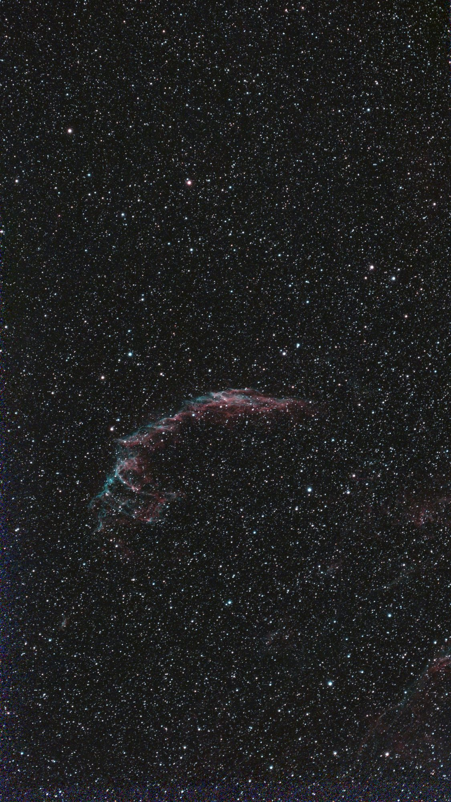

Gallery
Every picture here was captured and processed automatically. Tap one to open the full image, or the date for that night's log.
Elephant's Trunk Nebula · 2 h 9 min · 11 Oct 2026
These are deep-sky and solar pictures from a 30 mm Seestar S30 Pro smart telescope on a TH10 wedge in EQ mode, from a back garden in Oxfordshire, UK. Each one is a stack of many 10 to 30 second exposures, taken and processed automatically: how the telescope is driven and how the pictures are processed. Most were taken through the built-in dual-band filter, which passes the red light of hydrogen and the teal light of oxygen and cuts most light pollution.















